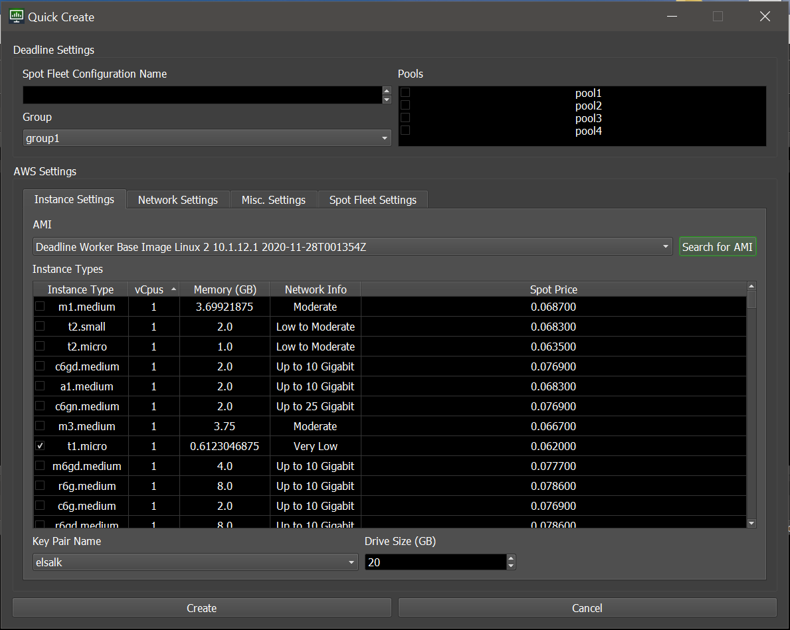
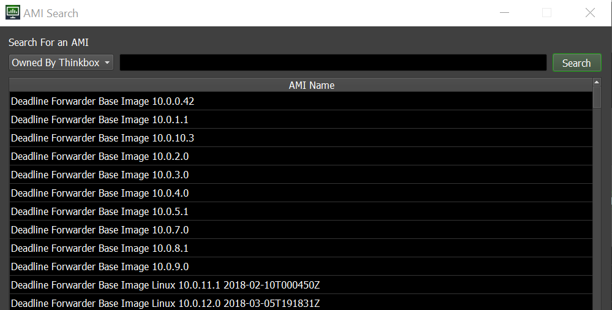
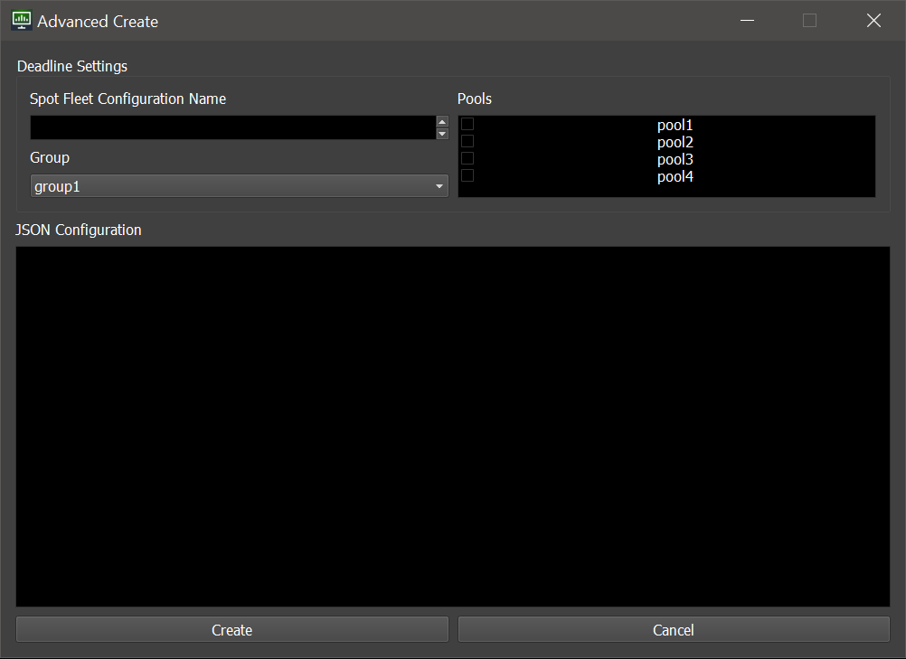
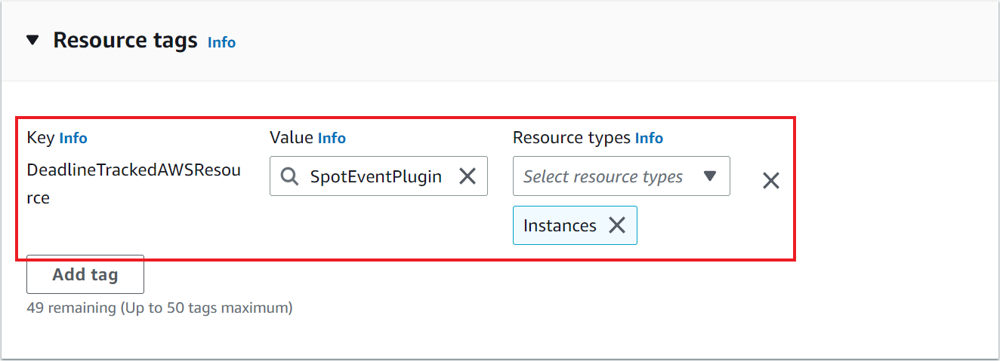

Spot Event Configuration Utility¶
Overview¶
Originally, the Spot Fleet Request JSON Dictionary configuration had to be created exclusively using the AWS Management Console’s EC2 Service > Spot Requests section.
A scripted utility for configuring the Spot Event Plugin’s Spot Fleet Requests is available in Deadline v10.1.14 and higher.
Warning
The Spot Event Configuration Utility does not currently support using Multiple Regions
Accessing The Utility¶
The Spot Event Configuration Utility can be accessed through the Scripts menu, under Configuration.
Using The Utility¶
The configuration dialog uses the existing configurations as a starting point.
If the Spot Event Plugin has already been configured on your system, the dialog will use your existing credentials and configurations.
The dialog displayes a list of all existing configurations, and offers option to edit or create new configurations.
To edit, double-click on a row, or right-click a row and select an Open In… option.
There are three modes of configuration creation. They all let you pick a Deadline Group and optional Deadline Pools as defined in your Deadline setup:
Quick Create
The Quick Create dialog will display a subset of the options visible in the AWS Management Console.Select the desired options and the dialog will automatically generate the correct JSON configuration.When using the Quick Create dialog, you can search for AMIs by the AMI name, or the AMI id.
- Advanced Create
- This mode allows you to directly copy a configuration from the AWS Management Console without needing to manually edit in the group name.The Advanced Create dialog will also validate the configuration, giving you instant feedback whether there are issues with it.
- Create From Launch Template
- This mode allows you to select an existing EC2 Launch Template from your AWS account.

Warning
If using Launch Templates you must add the following key/value pair as a Tag in the Launch Template.
DeadlineTrackedAWSResource : SpotEventPluginFailure to add this Tag will result in EC2 Instances being launched that won’t be managed/monitored by the Resource Tracker if it’s enabled.
It’s possible that if this Tag is not included, EC2 Instances that can’t connect to the repository may become stuck and won’t shut themselves down.
It’s crucial that this Tag is added to prevent large overspends in your AWS Account that could otherwise be prevented by the Resource Tracker and other mechanisms.


{kind=link}
{kind=link}
{kind=link}
{kind=link}
{kind=link}
{kind=link}